Nicht belohnt trotz Überzahl – SCH unterliegt dem VFC Plauen knapp mit 1:2
Die Seipel-Elf hat im Heimspiel gegen den favorisierten VFC Plauen eine bittere Niederlage hinnehmen müssen. Vor 380 Zuschauern im Gesundbrunnen unterlag unsere Elf den Sachsen am Ende knapp mit 1:2 (0:1) – und das, obwohl die Blau-Weißen nach einer Roten Karte für die Gäste mehr als 50 Minuten in Überzahl spielten. Am Ende blieb vor allem eines zurück: die Enttäuschung darüber, dass sich die Mannschaft für ihren Einsatz nicht belohnen konnte.
Früher Rückschlag nach eigenem Freistoß
Die Partie begann für den SCH eigentlich ordentlich. Die Blau-Weißen hielten gegen den Tabellenvierten und letztjährigen Regionalligisten aus Plauen gut dagegen und versuchten, mutig nach vorne zu spielen. Doch nach einer eigenen Standardsituation schlugen die Gäste eiskalt zu. Ein Freistoß wurde von Plauen abgefangen, der folgende Konter rollte über das Feld und Tyron Leon Haake war am Ende zur Stelle. Aus kurzer Distanz traf er in der 30. Minute zum 0:1 für die Vogtländer – ein bitterer Nackenschlag für die Hausherren.
Rote Karte bringt Überzahl für den SCH
Kurz vor der Pause dann die Szene, die das Spiel eigentlich hätte drehen können. Moritz Ruprecht brach nach einem starken Angriff durch. Plauens Innenverteidiger Eric Tavares Ganime Bastos konnte ihn nur noch per Notbremse stoppen – Rote Karte in der 38. Minute. Plauen musste fortan mit zehn Mann weiterspielen und der SCH hatte plötzlich die große Chance, das Spiel in Überzahl zu drehen. Auf dem Rasen entwickelte sich jedoch kein dauerhafter Druck, auch wenn die Blau-Weißen immer wieder den Weg nach vorne suchten.
Joker stechen: Gümpel gleicht per Flugkopfball aus
Mit zunehmender Spielzeit wurde der SCH mutiger. Trainer Benedikt Seipel brachte frische Kräfte – und diese sorgten tatsächlich für den ersehnten Ausgleich. Maximilian Lerch chippte den Ball in der 78. Minute gefühlvoll in den Strafraum, wo Leon Gümpel, der ebenfalls kurz zuvor eingewechselt worden war, zum Flugkopfball ansetzte. Der Ball schlug im Netz ein – 1:1 am Gesundbrunnen, und plötzlich war wieder alles möglich. Die Hoffnung auf den dritten Heimsieg der Saison lebte.
Riesenchance für Bako – dann schlägt Plauen zu
Der entscheidende Moment folgte nur wenige Minuten später. Kristian Bako tauchte plötzlich völlig frei vor Plauens Torhüter Karl Rajbeer Singh Pischon auf. Aus kurzer Distanz hatte der Angreifer die Riesenchance zur Führung – doch sein Abschluss landete genau auf den Fäusten des Keepers. Eine Szene, die sich im Nachhinein als möglicher Knackpunkt der Partie herausstellte. Denn nur drei Minuten später schlugen die Gäste zurück. Eine abgefälschte Flanke segelte in den Strafraum, wo der eingewechselte Maurice Wagner in der 82. Minute frei zum Kopfball kam und zum 1:2 traf.
Große Enttäuschung nach dem Abpfiff
Der SCH versuchte in den Schlussminuten noch einmal alles, doch der erneute Ausgleich wollte nicht mehr fallen. Plauen verteidigte leidenschaftlich und brachte den knappen Vorsprung über die Zeit.
Trainer Benedikt Seipel zeigte sich nach dem Spiel enttäuscht, lobte aber gleichzeitig den Einsatz seiner Mannschaft:
„Wir haben in Überzahl alles versucht und hatten beim Stand von 1:1 drei richtig gute Chancen, darunter auch eine Hundertprozentige. Wenn die reingeht, gewinnen wir das Spiel wahrscheinlich.“
Rückschlag im Kampf um den Klassenerhalt
Was bleibt, ist die Erkenntnis, dass die Mannschaft wieder einmal auch gegen ein Spitzenteam der Liga mithalten kann. Doch am Ende entscheidet im Fußball oft die Effektivität – und genau dort hatte an diesem Tag der VFC Plauen die Nase vorn.
Spieldaten
1. SC 1911 Heiligenstadt – VfC Plauen 1:2 (0:1)
SC Heiligenstadt
Fröhlich – Abdoul Aziz (67. Lerch) – Göbel (46. Michalek) – Taveres – Stashenko (82. Wilhelm) – Schnellhardt – Pietsch (61. Gümpel) – Ruprecht – Voilenko – Fiedler (61. von Breitenbuch) – Bako
VfC Plauen
Pischon – Tavares – Haake – Limmer – Winter (56. Martynets) – Michalek – Plank (46. Glaser) – De Moura Beal – Schubert – Profis (56. Wagner) – Hussain (46. Kämpfer)
Schiedsrichter
Werner
Zuschauer
380
Tore:
0:1 Haake (30.), 1:1 Gümpel (78.), 1:2 Wagner (82.)
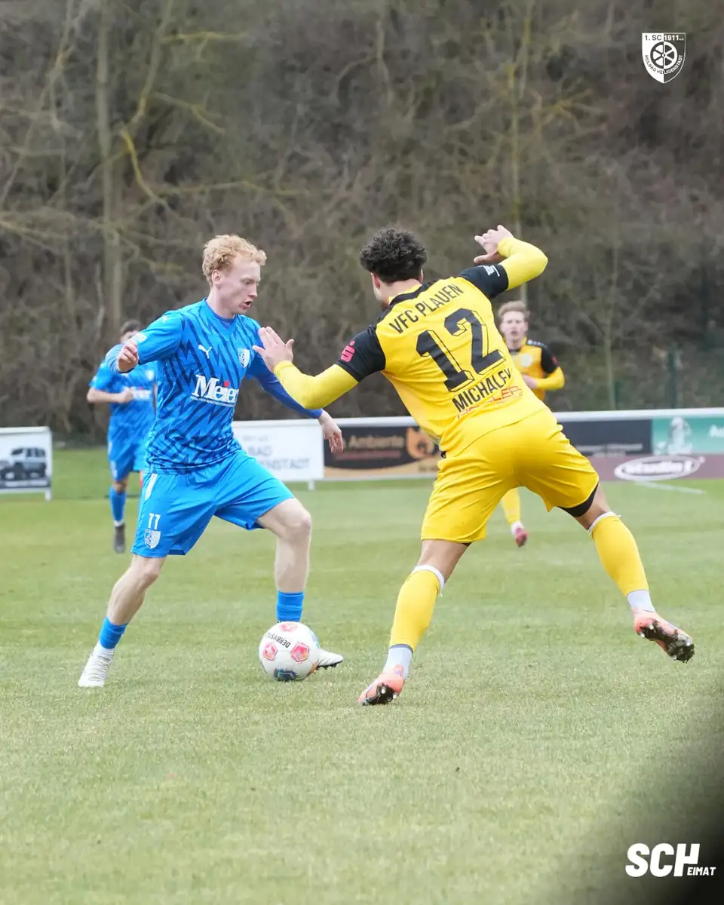
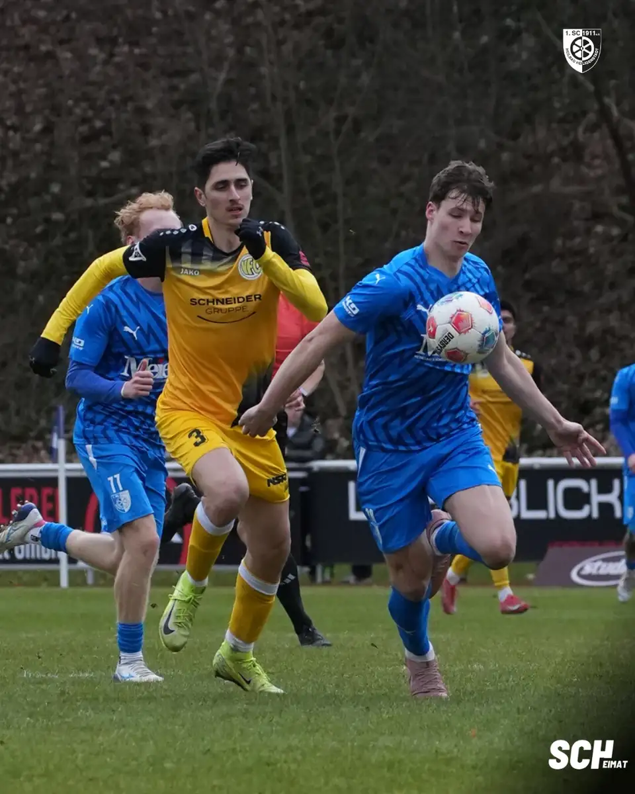
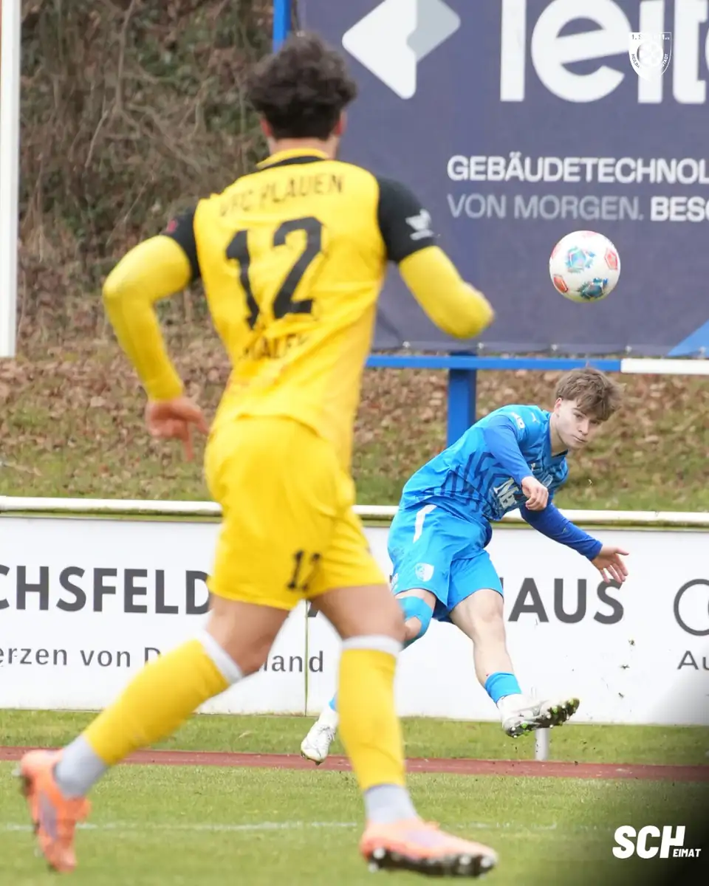
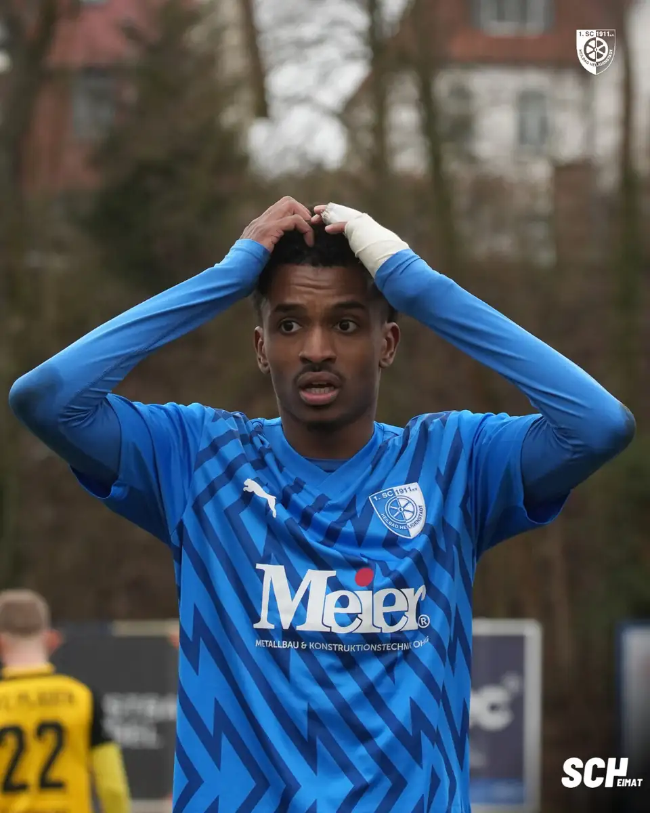
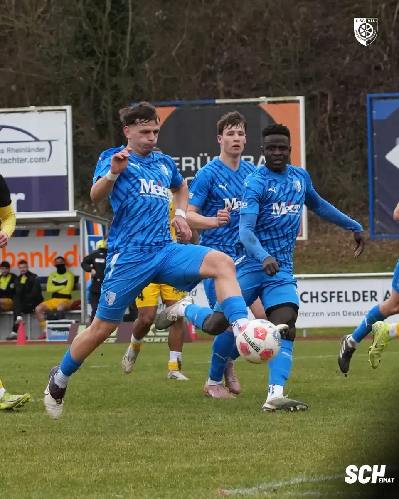
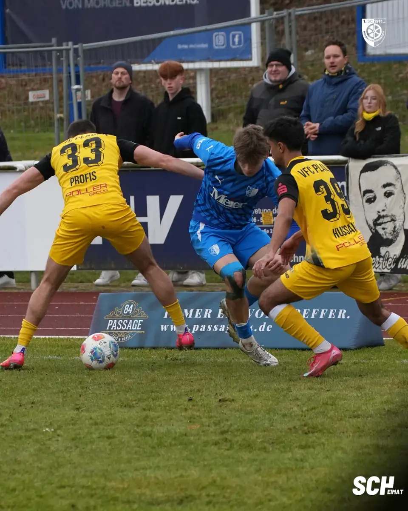
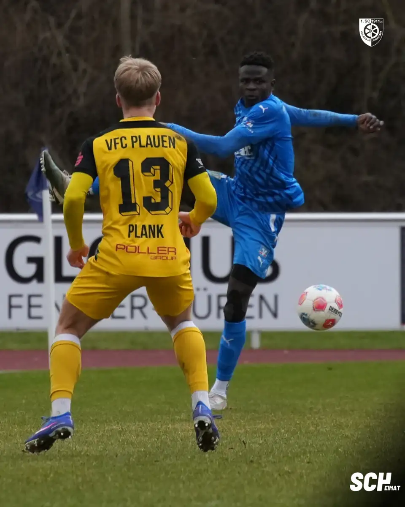
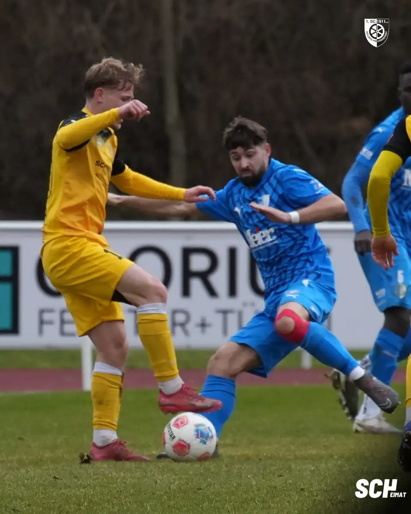
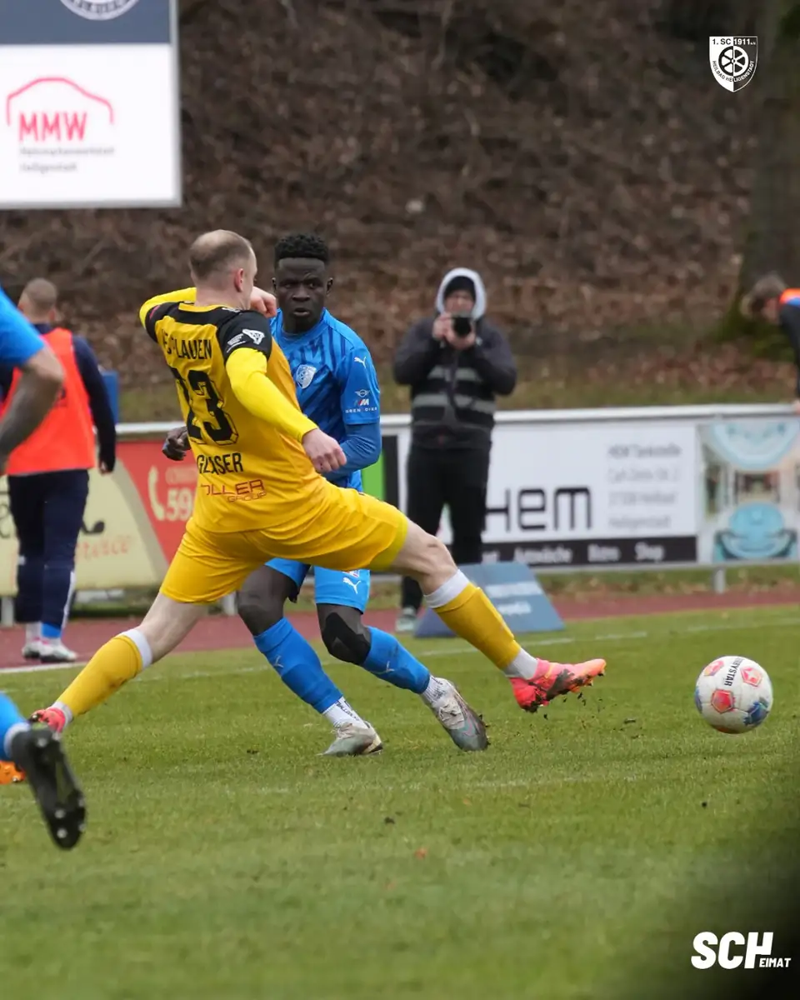
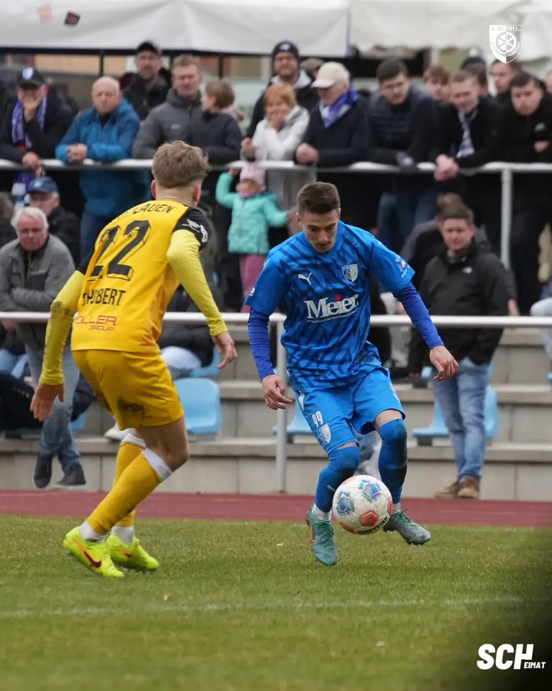
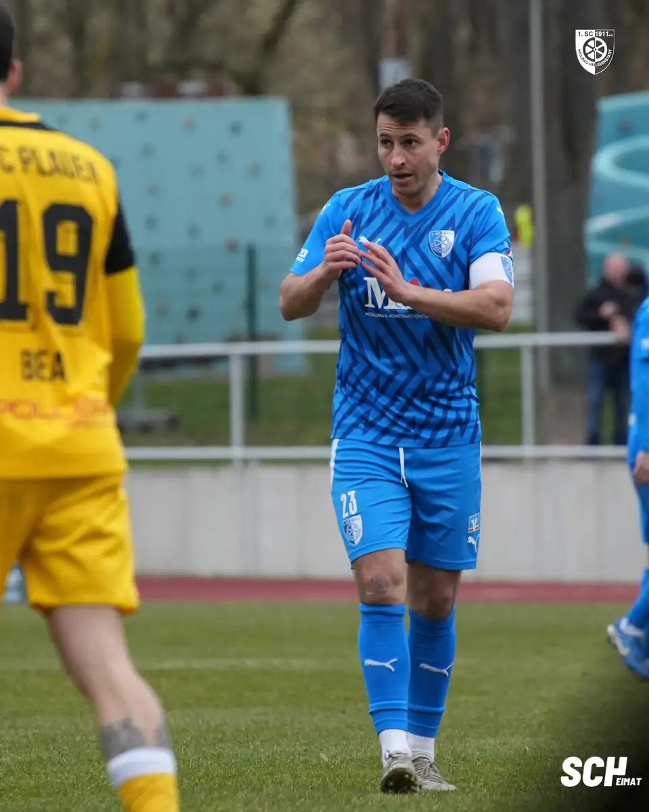
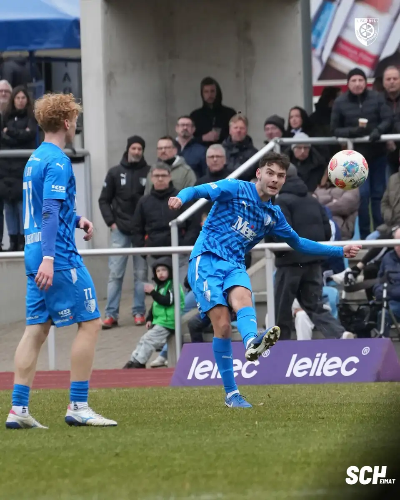
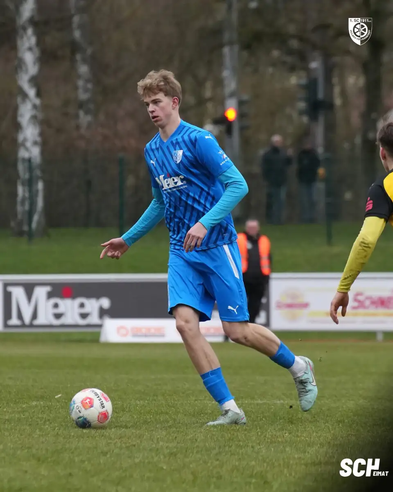